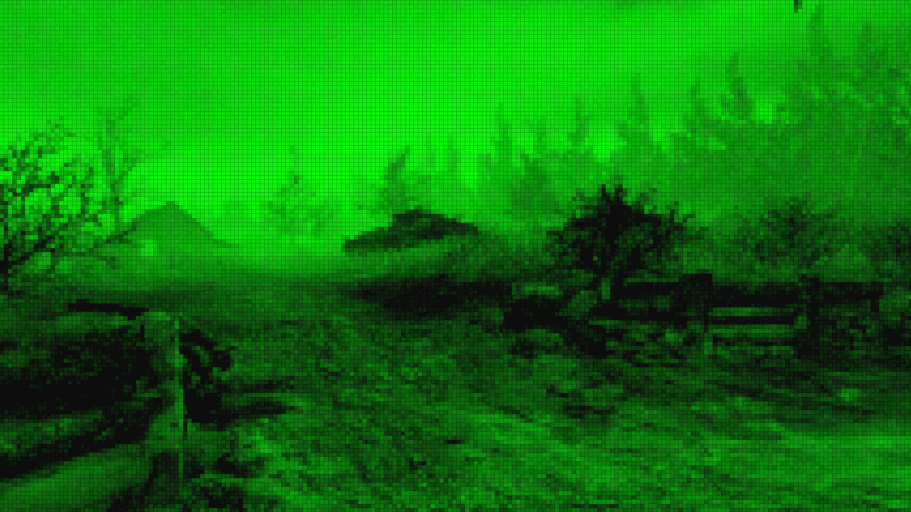

Entre les deux options qu’on avait, on a choisi de rester là. S’échapper semblait dangereux et comportais des risques inutiles, bien qu’on ne sût pas ce qui nous attendait à l’extérieur,
cela nous semblait la meilleure des deux alternatives. Le lendemain matin un officier de l’armé et venu nous chercher. Il nous a amené dans une pièce et nous a fait mettre des combinaisons.
Elle ressemblait à des combinaisons d’astronaute. Il nous a expliqué que les combinaisons étaient faites pour garder notre température corporelle à un niveau supportable en plus de fournir de l’oxygène.
Il nous avait expliquer qu’on en avait pour à peu près 48h et que l’autre fort le plus proche était au nord de la sortie. Il nous a donner un couteau chaque et nous a emmener devant une grande porte d’ascenseur.
Nous sommes montées à l’intérieur. Il a commencé à monter.

Quand il s’est arrêté les portes se sont ouverte, et je n’en croyais pas mes yeux. Une pièce vitré immaculé de toute poussière. Les vitres donnaient sur l’extérieur, le monde réel.
À ma grande surprise ça ne ressemblait absolument pas à ce que j’avais entendu ou vu quand j’étais petit dans mes livres d’histoire. Le sol était brulé, je ne voyais pas d’arbre, pas de nuage, c’était vide très vide, trop vide.
À ce moment-là je me rappelle m’être senti seul au monde. Au bout de la pièce il y avait une porte ouvrable avec un levier. L’officier s’y est dirigé et à abaisser le levier.
La porte s’est ouverte et nous sommes rentrés à l’intérieur. Il nous a expliqué qu’il s’agissait d’une Salle de décontamination. La porte s’est fermée derrière nous, et une autre s’est ouverte à l’avant. J’ai regardé Sarah.
Alan : T’est prête?
Sarah : Ouais.
Je suis sorti à l’extérieur pour la première fois, je n’arrivais plus à bouger tellement j’étais choqué... Sarah m’a poussé vers l’avant pour que j’avance.
Sarah : Go...avance, par là.
Sarah a pointé le nord, à ce moment j’ai hésité à la suivre. J’avais un choix.